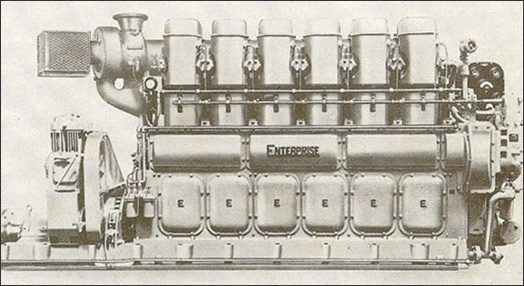

Enterprise Engine & Foundry Co
The Enterprise Engine and Foundry Co. was founded in 1886. The original efforts were strictly that of producing castings for many varied requirements for bay area manufacturing. During the first 30 years of the company's existence, castings for engines were being made for practically all the builders in the bay area.
Therefore, being in the heavy machinery industry and already supplying many of the difficult castings for engines, it was a logical step for Enterprise to enter into the manufacturing of internal combustion engines. The first engine was built in 1917 in the south San Francisco shop. It was an engine designed to operate on gasoline and distillate.
Browse Known Remaining Engines

Resources
Chart of models manufactured by Enterprise Engine & Foundry Co
Operation & Repair Manuals
History of the Enterprise Engine & Foundry
Map of Known Remaining Enterprise Engines
Wikipedia article on the Enterprise Engine & Foundry Co.
Tugboat Enthusiast Society's article on Enterprise Diesels